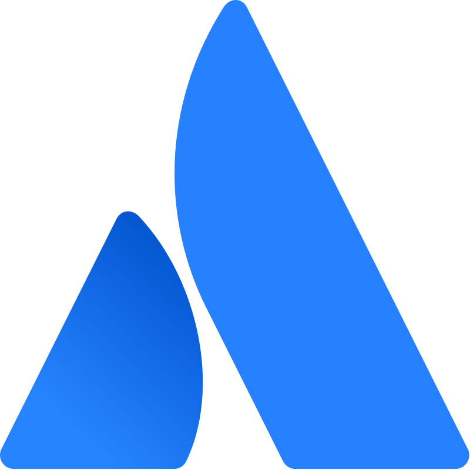
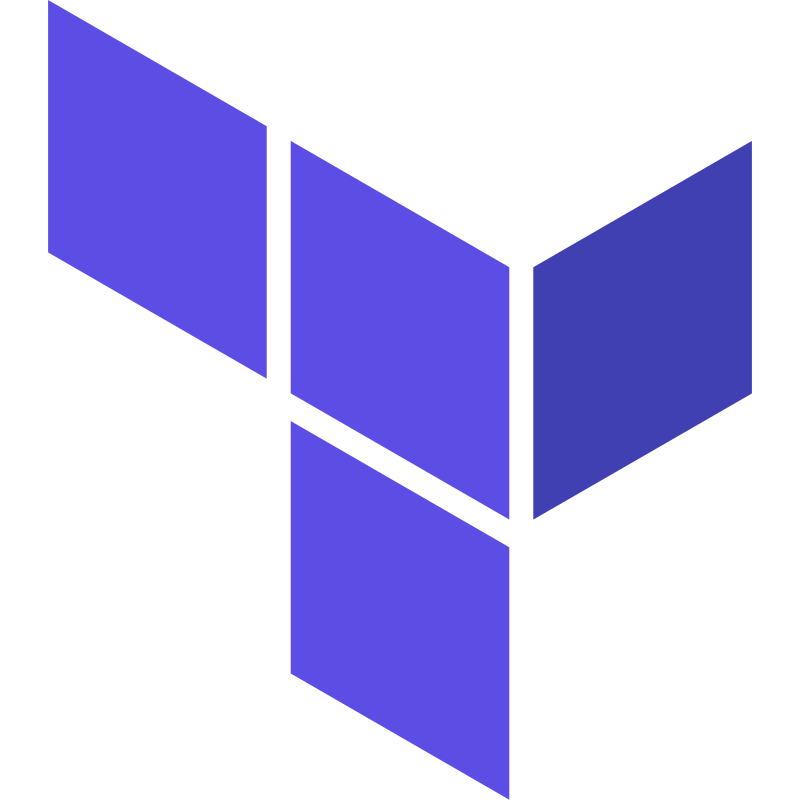

L'ecosistema Claude
per accelerare lo sviluppo
Proposta di adozione enterprise — Perché Claude Code e il protocollo MCP rappresentano un salto qualitativo rispetto a Copilot e Gemini.

SYS-FASHION
Il team che guida l'adozione
Gli Ambassador interni che hanno testato Claude Code in produzione e promuovono l'integrazione a livello aziendale in OT Consulting.
SYS-FASHION
Una giornata tipo senza il tool giusto
Tre scenari reali in cui gli strumenti attuali rallentano il team.
(modello default)
Il dev chiede "dove viene validato il pagamento?"
Con Copilot: contesto 128K token (modello default GPT-4.1; alcuni modelli opzionali arrivano a 200K), ricerca a snippet indicizzati. Il tool trova frammenti ma non capisce il flusso end-to-end. Il dev deve navigare manualmente 15 file per ricostruire la catena.
Con Claude Code: 1M di contesto continuo. Analizza l'intero codebase, segue le dipendenze e risponde con il flusso completo in secondi.
in parallelo
Arriva un bug critico in produzione
Oggi: apri Splunk per i log, Jira per il ticket, GitHub per il codice, Slack per avvisare il team. Copilot e Gemini supportano MCP dal 2025, ma solo in IDE — non orchestrano il flusso.
Con Claude Code: un unico comando nel terminale interroga Splunk, legge il codice, crea il fix, apre la PR e aggiorna il ticket Jira. Tutto via MCP nativo.
vs 4 in Claude
Un nuovo dev entra nel progetto
Oggi: Copilot ha copilot-instructions.md, Gemini ha
styleguide.md — file statici senza gerarchia. Ogni dev puo' ignorarli o sovrascriverli.
Con Claude Code: CLAUDE.md a 4 livelli (Enterprise → User → Project → Local) + Skills componibili. Le policy aziendali hanno sempre priorita' — impossibile bypassarle.
SYS-FASHION
Claude: un sistema integrato
Claude Code è un assistente agentico a riga di comando con accesso completo al codebase, capacità di eseguire comandi, e un protocollo aperto per connettersi a qualsiasi tool aziendale.
Agentic, non passivo
Legge il codebase, esegue test, crea branch, fa commit. Non si limita a suggerire — agisce.
Open Standard
MCP è un protocollo aperto (come USB-C per l'AI): qualsiasi tool può connettersi, senza vendor lock-in.
Multi-scope config
4 livelli: Managed (enterprise), User, Project e Local. Le policy aziendali hanno sempre priorità. Condivisibili via version control.
SYS-FASHION
Un protocollo. Migliaia di integrazioni.
MCP è stato creato da Anthropic nel Nov 2024, adottato da OpenAI (Mar 2025) e Google (commitment Apr 2025, deployment produzione Ott–Dic 2025), e donato all'Agentic AI Foundation sotto la Linux Foundation (Dic 2025). A Marzo 2026, l'ecosistema conta oltre 10.000 server.

Atlassian
Jira · Confluence · Compass
Splunk
Search · Index · KV Store
GitHub
Repos · Issues · PR · Actions
Slack
Messaggi · Canali · Search
PostgreSQL
Query · Schema · Migration
AWS
ECS · EKS · Serverless
Salesforce
CRM · Leads · Pipeline
Figma
Design · Components · Inspect
Playwright
Browser · Test · Scraping
Notion
Pages · Database · Wiki

Terraform
IaC · Plan · Apply · State
Gmail / GCal
Email · Calendar · Drive
L'ecosistema include anche: Stripe, HubSpot, Zapier, Datadog, Sentry, MongoDB, Redis, Docker, Kubernetes, e centinaia di altri.
Fonti timeline: Anthropic (AAIF) · Wikipedia MCP
SYS-FASHION
Jira integrato nel terminale
L'MCP Server ufficiale Atlassian Rovo connette Claude Code a Jira, Confluence e Compass. Ricerca issue, crea ticket, transiziona stati — tutto in linguaggio naturale.
SYS-FASHION
Interroga Splunk senza scrivere SPL
L'MCP Server per Splunk Cloud trasforma l'istanza in una piattaforma AI-native con 13 tool, ricerche in linguaggio naturale e rispetto dei permessi esistenti.
SYS-FASHION
Pull Request automatiche su GitHub
Claude Code si integra nativamente con GitHub: crea PR, revisiona codice con
agenti multi-livello, e risponde a menzioni @claude direttamente nelle issue e PR.
Fonti: GitHub Actions Docs · Code Review Docs · claude-code-action repo
SYS-FASHION
Insegna a Claude le regole del tuo team
Le Skills sono moduli riutilizzabili che codificano conoscenza di dominio, workflow e best practice. Si attivano automaticamente quando servono, si condividono via Git.
SYS-FASHION
Onboarding istantaneo su ogni repository con CLAUDE.md
CLAUDE.md è un file alla root del progetto che insegna a Claude il WHY, WHAT e HOW del codebase. Come un senior engineer che conosce tutto il progetto — disponibile dal giorno 1.
WHY — Scopo del progetto
Perché esiste questo repo? Quali problemi risolve? Quali sono i vincoli di business? Claude comprende il contesto strategico.
WHAT — Mappa del codebase
Struttura directory, tech stack, dipendenze, architettura. Claude sa dove cercare e come navigare il progetto.
HOW — Come lavorare
Comandi di build/test, convenzioni di naming, git workflow, deploy. Claude lavora come farebbe un membro del team.
SYS-FASHION
Il workflow Enterprise con l'ecosistema Claude
Dalla pianificazione alla chiusura progetto — come una società di consulenza enterprise gestisce l'intero ciclo di vita, incluse change request e ticketing AM, con Claude.
SYS-FASHION
ROI concreto: anatomia di una feature
Feature da 20 giorni di solo sviluppo (160h) — senior dev + Claude Code agentico al 100%, sub-agent paralleli su worktree isolati.
SYS-FASHION
Claude Code vs Copilot vs Gemini
I competitor hanno recuperato terreno nel 2025, ma restano gap strutturali nell'ecosistema enterprise.
SYS-FASHION
1M di contesto, senza perdere il filo
Il context rot è il degrado delle prestazioni all'aumentare del contesto. A 1M di token, Opus 4.6 mantiene il 78.3% di accuratezza — GPT-5.4 crolla al 36.6%, Gemini 3.1 Pro al 25.9%.
Fonte: Anthropic — Claude 4.6 Model Card
SYS-FASHION
Non solo DEV! Mockup interattivi, non immagini statiche
Claude Desktop genera artifacts interattivi — vero codice HTML, CSS e JavaScript eseguito live nel browser. Gemini genera codice ma senza ambiente di esecuzione integrato nella chat.
SYS-FASHION
Costi a confronto: Claude vs competitor
Prezzi per utente/mese dei principali piani. Claude offre Claude Code incluso dal piano Pro; i competitor richiedono add-on o tier separati per funzionalità equivalenti.
Fonti: claude.com/pricing · chatgpt.com/pricing · github.com/copilot/plans · gemini.google/subscriptions
SYS-FASHION
Piani Claude: prezzi e funzionalità
Dettaglio dei piani Claude per uso personale, team ed enterprise. Prezzi per utente/mese in EUR.
- Sonnet (uso limitato)
- Projects base
- Claude.ai web & mobile
- Opus 4.6 + Sonnet 4.6
- Claude Code (CLI agentica)
- Contesto 200K–1M tokens
- MCP nativo
- Projects con memoria
- 5× utilizzo rispetto a Pro
- Claude Code sessioni estese
- Tutti i modelli disponibili
- Priorità nelle ore di punta
- 20× utilizzo rispetto a Pro
- Claude Code praticamente illimitato
- Tutti i modelli disponibili
- Priorità massima
- €17 ann. / €21 mens. per utente
- Tutto il piano Pro per ogni seat
- Admin console & gestione utenti
- Shared Projects di team
- Dati esclusi dal training
- Min 5 utenti
- Claude Code potenziato (uso pro)
- Code Review automatica su PR
- GitHub Actions integrazione
- Multi-agent su worktree paralleli
- Admin controls avanzati
- Min 5 utenti
- SSO / SAML (Okta, Azure AD…)
- Audit log completo
- Compliance (SOC 2, HIPAA ready)
- Data retention configurabile
- Supporto dedicato con SLA
- Claude.ai for Work avanzato
Fonte: claude.ai/pricing · anthropic.com/pricing
SYS-FASHION
Formazione & Certificazione
13 corsi gratuiti su Skilljar per tutti, più la certificazione ufficiale Claude Certified Architect per le aziende nel Partner Network. $100M investiti da Anthropic nel Claude Partner Network nel 2026.
Anthropic Academy (gratuita)
13 corsi self-paced su anthropic.skilljar.com — da Claude 101 alla costruzione di server MCP avanzati in Python. Certificati di completamento per LinkedIn. Nessun paywall.
Claude Certified Architect
Esame proctored da 60 domande su architettura agentica, MCP, Claude Code e design di sistemi AI in produzione. Gratuito per i primi 5.000 dipendenti partner, poi €99.
Claude Partner Network
Adesione gratuita per qualsiasi azienda. Include: accesso prioritario a certificazioni, Applied AI engineer dedicati, co-marketing e sales playbook. OT Consulting può aderire subito.
Partner già attivi: Accenture (30.000 professionisti), Cognizant (~350.000 dipendenti), Deloitte, Infosys. Prossime cert nel 2026: sellers, architects, developers.
Fonti: anthropic.com/news/claude-partner-network · news.cognizant.com · anthropic.skilljar.com
SYS-FASHION